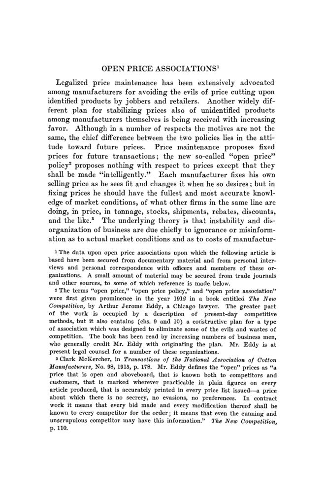

Tosdal, 1917: concorrentes podem trocar preços?
Leitura: 8 min
Tosdal descreve as associações de preço aberto, em que fabricantes trocam dados sobre preços já praticados sem fixar os futuros, e conclui que o plano é legal e útil, mas peculiarmente suscetível de abuso.


Em 1º de março de 1917, a Hardwood Manufacturers Association of America começou a operar sob um plano que pedia a cada membro um relatório diário de todas as vendas e cancelamentos do dia, houvesse ou não negócios. Os relatórios deviam ser cópias exatas dos pedidos e incluir todos os acordos especiais sobre preço, classificação ou condições, escritos ou verbais. Para começar, o plano cobria só o carvalho, a madeira mais produzida pelos sócios.
É um dos exemplos que H. R. Tosdal, da Boston University, reúne no artigo sobre as associações de preço aberto, com base em documentos, entrevistas e correspondência com dirigentes e membros dessas organizações. O plano da madeira de lei declara seu propósito de modo direto.
O objetivo era “tornar a concorrência aberta e franca, em vez de secreta e oculta”. (“to make competition open and aboveboard instead of secret and concealed”)
O que distingue o preço aberto da manutenção de preços?
Tosdal compara duas políticas para estabilizar preços. A manutenção legal de preços, defendida por fabricantes contra os cortes de jobbers e varejistas em produtos identificados por marca, fixa preços para transações futuras. O plano de preço aberto, aplicado também a produtos sem marca, não propõe nada sobre preços além de que sejam feitos com inteligência. Cada fabricante fixa e muda seu preço quando quer, mas deve conhecer o que os outros estão fazendo em preço, tonelagem, estoques, embarques, abatimentos e descontos.
A teoria por trás do plano é que a instabilidade dos negócios vem sobretudo da ignorância ou da desinformação sobre as condições de mercado e os custos, e que o conhecimento exato basta como remédio. O termo ganhou destaque em 1912 com The New Competition, livro do advogado de Chicago Arthur Jerome Eddy, que se tornou consultor jurídico de várias dessas associações. Para Eddy, o preço aberto é conhecido de concorrentes e clientes, impresso nas listas, sem segredos, evasivas nem preferências.
Até onde o plano tinha chegado?
No setor têxtil, cerca de 35 firmas de acabamento de algodão formaram no início de 1914 a National Association of Finishers of Cotton Fabrics, seguida pela associação dos fabricantes de guingão, em 1915, e por associações locais em Fall River e New Bedford. A National Association of Cotton Manufacturers estudava reorganizar-se para incluir um escritório de troca de informações. Na lã, catorze firmas, algumas das maiores do país, criaram a Woolen Goods Exchange.
Na madeira, além da Hardwood, a Western Pine Manufacturers mantinha desde 1912 um Information Bureau. No ferro e no aço, a Bridge Builders' and Structural Society, com firmas não ligadas à Steel Corporation, funcionava desde maio de 1911, e oito firmas da Associated Metal Lath Manufacturers respondiam por cerca de 90% da produção de tela metálica. A Leather Belting Exchange foi criada em agosto de 1915, depois de tentativas frustradas de fixar preços em 1909 e 1910. Havia associações também entre moleiros, fabricantes de amianto, tijolos, sal e instrumentos ópticos.
Como funcionava uma associação?
Algumas foram criadas para esse fim; a maioria nasceu de associações comerciais que se converteram ou abriram departamentos de troca de informação. A filiação era praticamente aberta, porque interessava ter o maior número possível de membros, e as anuidades eram muitas vezes graduadas pela capacidade de cada firma. O membro se comprometia a informar e tinha direito a receber informação enquanto cumprisse o acordo; não havia outra penalidade senão deixar de recebê-la.
As reuniões, muitas vezes mensais, eram o ponto sensível. Os membros perguntavam uns aos outros sobre os detalhes de transações passadas, as razões das cotações e os métodos de custo, e a conversa podia deslizar, consciente ou inconscientemente, para os preços futuros. Muitas associações mantinham um advogado presente em todas as reuniões, e algumas enviavam as atas à Federal Trade Commission.
O sistema de relatórios tinha dois tipos. Em obras por contrato, como as estruturas metálicas, cada membro mandava ao secretário cópia de cada proposta; os que disputavam a mesma obra recebiam as propostas dos outros e podiam revisar as suas quantas vezes quisessem, e quem não concorria nada recebia. Na Pressed Metal Association, o relatório só era feito quando dois membros cotavam as mesmas peças para o mesmo cliente.
Na venda corrente a jobbers e varejistas, os relatórios iam de cópias diárias de todos os pedidos, como na madeira de lei, a resumos semanais ou mensais. Na Leather Belting Exchange, só as faturas acima de sessenta dólares entravam no relatório, sem o nome do comprador e com o vendedor identificado por um número conhecido apenas do secretário. A relutância em informar concorrentes, a falta de verba e o trabalho envolvido faziam com que a maioria das associações não aplicasse o plano por inteiro.
Era legal?
A legalidade não fora decidida pelos tribunais nem por lei, e o Departamento de Justiça e a Federal Trade Commission mantinham posição estritamente neutra diante dos estatutos que lhes eram submetidos. O único caso próximo foi o processo de dissolução da Steel Corporation. Ao tratar dos jantares de Gary, o tribunal aceitou que concorrentes se reúnam e troquem informações, mesmo sobre preços, e condenou o objeto e o efeito de manter preços. Eddy leu a decisão como aprovação da troca de informações sobre preços já feitos e reprovação da discussão de preços a fazer.
Tosdal registra também os limites. Num caso estadual, as associações de pinho amarelo foram condenadas porque o secretário publicava só os preços mais altos, e os preços passaram a girar em torno dos fixados. A troca de custos uniformes podia servir para fixar preços por via indireta, como em associações de máquinas agrícolas que discutiam e recomendavam preços futuros. E ele soube, por várias fontes, de associações ditas de preço aberto que fixavam preços por ignorância ou por intenção deliberada de burlar a lei.
O que Tosdal concluía?
Era cedo para medir efeitos sobre os preços. Em teoria, informação igual e exata para todos os vendedores tende a estabilizar preços, e os membros afirmavam que isso acontecia. A estabilidade só é desejável se o nível não for alto demais, e Tosdal não via motivo para crer que a discussão de transações passadas o elevasse a ponto de ferir o interesse público. O conhecimento dos custos elimina cortes de preço por ignorância, embora custos calculados por um sistema uniforme tendam a aproximar os preços sem restringir a concorrência.
Ele compara a informação trocada à que as bolsas de mercadorias publicam sobre ofertas e negócios: ninguém negaria que o mercado de trigo ou de algodão seja competitivo. A cooperação para reunir e distribuir essa informação lhe parece legal e economicamente desejável, mas o balanço final fica para quando houver mais experiência e dados mais conclusivos.
A ressalva de Tosdal: a organização de preço aberto é “peculiarmente suscetível de abuso”. (“the open price organization is peculiarly susceptible of abuse”)
Na minha leitura
Na minha leitura, o artigo isola com precisão a variável que separa a cooperação da colusão: a direção temporal da informação. Dados sobre preços já praticados podem melhorar a formação de preços de cada vendedor; declarações sobre preços futuros coordenam o comportamento. Tosdal mostra que a fronteira é institucional, mantida por advogados nas reuniões, e por isso frágil.
O outro ponto técnico é o grau de detalhe. Relatórios com o nome de comprador e vendedor permitem vigiar quem corta preços; resumos agregados, com nomes em código, informam sobre o mercado sem expor cada transação. A mesma escolha entre transparência individual e agregada continua no centro da análise das trocas de informação entre concorrentes.
Glossário
- Preço aberto
- política de troca, entre concorrentes, de informações sobre preços e negócios já realizados.
- Manutenção de preços
- fixação pelo fabricante do preço de revenda de seus produtos.
- Jobber
- atacadista que compra em lotes e revende em pequenas quantidades ao varejo.
- Associação comercial
- organização de empresas de um mesmo ramo para fins comuns.
- Proposta selada
- proposta mantida em sigilo até o fechamento do contrato.
- Jantares de Gary
- reuniões de dirigentes siderúrgicos promovidas por Elbert H. Gary, examinadas no processo contra a Steel Corporation.
Fontes
- Open Price Associations — H. R. Tosdal, Boston University (pp. 331–352). JSTOR · Internet Archive (PDF)
- Edição completa, com os demais artigos: Nº 147 do Arquivo.
Documento em domínio público (EUA, publicado antes de 1931), via JSTOR Early Journal Content e Internet Archive. Resumo e comentário do autor deste site, sem afiliação com a American Economic Association. Encontrou um erro? Escreva: a correção é publicada no próprio texto, com data.
← Willis, 1917: o que o Federal Reserve tinha feito? ↑ Nº 147 · O Federal Reserve aos dois anos, a madeira e as associações de preço